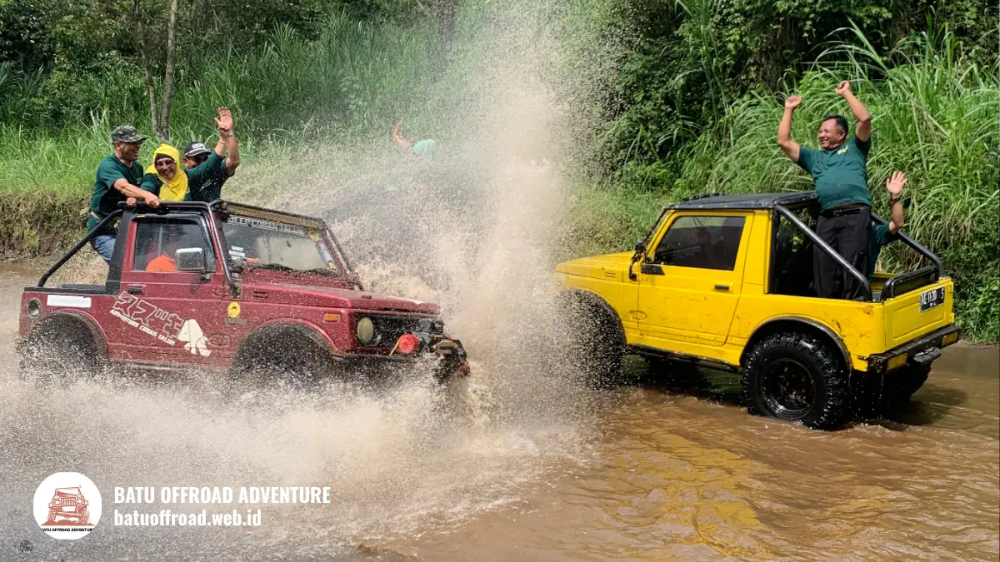

Cara Memilih Operator Offroad Batu yang Terpercaya
Cara cek operator offroad Batu yang terpercaya adalah memeriksa identitas usaha, alamat basecamp, profil Google, ulasan terbaru, serta kejelasan armada dan prosedur keselamatan. Operator resmi biasanya mudah dihubungi, transparan soal harga, dan bersedia menjawab pertanyaan sebelum Anda membayar.
Poin Kunci Memilih Operator
- Operator offroad Batu terpercaya memiliki identitas usaha dan alamat basecamp yang jelas.
- Profil Google dan ulasan terbaru membantu menilai reputasi operator.
- Armada, driver, dan standar keselamatan harus bisa dijelaskan secara terbuka.
- Harga, isi paket, dan kebijakan jadwal ulang sebaiknya tertulis.
- Waspadai operator yang menolak menjawab pertanyaan dasar atau menekan pembayaran tergesa-gesa.
Kenapa Perlu Selektif Memilih Operator Offroad?
Wisatawan perlu selektif memilih operator offroad karena keselamatan, kenyamanan, dan kejelasan harga sangat bergantung pada kualitas armada, pemandu, dan transparansi layanan operator.
Wisata jeep melibatkan kendaraan di jalur tanah dan tanjakan. Kondisi kendaraan dan kemampuan pengemudi langsung memengaruhi keselamatan. Selain itu, operator yang tidak transparan dapat menimbulkan biaya tak terduga atau perbedaan antara janji dan kenyataan.
Kota Batu adalah destinasi yang sangat ramai. Paparan kinerja Pemkot Batu mencatat 10.737.865 kunjungan wisata pada 2024. Dengan banyaknya pengunjung, jumlah penyedia jasa wisata juga banyak, sehingga kualitas layanan dapat bervariasi. Pemilihan yang cermat membantu Anda menghindari pengalaman yang kurang menyenangkan.
Manfaat memilih secara selektif:
- Perjalanan lebih aman.
- Harga dan isi paket lebih jelas.
- Layanan lebih responsif bila ada kendala.
- Pengalaman wisata lebih sesuai harapan.
Bagaimana Cara Mengecek Identitas Usaha dan Profil Google Operator?
Cara mengecek identitas usaha dan profil Google operator adalah memeriksa nama usaha, alamat basecamp, nomor kontak, jam operasional, dan kesesuaian informasi di berbagai kanal resmi.
Operator yang serius biasanya mencantumkan identitas usaha secara konsisten. Periksa hal-hal berikut:
- Nama dan alamat. Pastikan alamat basecamp jelas dan dapat ditemukan di peta.
- Kontak resmi. Nomor telepon atau pesan bisnis yang aktif dan responsif.
- Profil Google. Periksa foto, jam buka, dan ulasan pada profil bisnis.
- Kanal resmi lain. Situs web atau akun media sosial yang aktif dan konsisten.
- Legalitas usaha. Tanyakan apakah usaha memiliki izin sesuai ketentuan setempat, misalnya nomor induk berusaha.
Keterbukaan adalah indikator penting. Operator yang baik biasanya tidak keberatan ditanya soal legalitas dan basecamp. Wisatawan juga dapat menanyakan informasi kepada instansi pariwisata setempat bila ragu.
Cocokkan informasi antarkanal. Jika alamat, nama, atau nomor kontak berbeda-beda tanpa penjelasan, itu patut diwaspadai. Hindari mentransfer uang sebelum identitas operator terasa meyakinkan.
Apa tanda operator yang perlu diwaspadai?
Tanda operator yang perlu diwaspadai adalah identitas tidak jelas, harga tidak transparan, menolak menjawab pertanyaan keselamatan, dan menekan pembayaran tergesa-gesa.
Tanda lain yang patut diperhatikan adalah ulasan yang tampak seragam atau tidak natural, serta foto yang tidak sesuai dengan kondisi sebenarnya. Satu tanda saja belum tentu masalah, tetapi beberapa tanda sekaligus layak membuat Anda mempertimbangkan ulang.

Pengalaman seru menerjang arus sungai dengan armada terawat dan driver profesional.
Bagaimana Membaca Ulasan Operator Offroad dengan Bijak?
Membaca ulasan operator offroad dengan bijak berarti memperhatikan ulasan terbaru, pola komentar yang berulang, dan tanggapan operator, bukan hanya jumlah bintang.
Ulasan adalah sumber informasi berharga, tetapi tidak sempurna. Berikut cara membacanya:
- Lihat tanggal. Ulasan terbaru lebih mencerminkan kondisi sekarang.
- Cari pola. Keluhan yang sama berulang lebih penting daripada satu komentar tunggal.
- Baca ulasan positif dan negatif. Gambaran seimbang lebih informatif.
- Perhatikan tanggapan operator. Respons sopan dan solutif menunjukkan komitmen.
- Waspadai ulasan janggal. Bahasa yang terlalu seragam atau berlebihan bisa menjadi tanda tidak natural.
Ulasan tidak boleh menjadi satu-satunya dasar keputusan. Satu pengalaman buruk dapat dipengaruhi cuaca atau faktor lain. Kombinasikan ulasan dengan percakapan langsung bersama operator dan pemeriksaan identitas usaha.
Hindari menyimpulkan secara berlebihan. Operator dengan sedikit ulasan belum tentu buruk, terutama bila baru beroperasi. Dalam kasus itu, pertanyaan langsung kepada operator menjadi lebih penting.
Bagaimana Menilai Armada, Driver, dan Standar Keselamatan?
Menilai armada, driver, dan standar keselamatan dilakukan dengan menanyakan kondisi jeep, prosedur pengecekan, pengalaman pemandu, dan perlengkapan keselamatan yang tersedia.
Pertanyaan yang wajar diajukan:
- Apakah jeep diperiksa sebelum beroperasi?
- Bagian apa saja yang dicek, misalnya rem, ban, dan mesin?
- Sudah berapa lama pemandu bertugas di jalur ini?
- Apakah ada pegangan atau sabuk pengaman?
- Apa prosedur jika jeep mengalami kendala?
- Apakah ada briefing keselamatan sebelum berangkat?
Operator yang profesional biasanya menjawab dengan jelas. Perhatikan juga kesan umum saat berkunjung ke basecamp, seperti kebersihan, kondisi kendaraan, dan sikap staf.
Keselamatan tidak pernah bebas risiko sepenuhnya. Operator yang baik menekankan kepatuhan peserta pada arahan, sedangkan peserta wajib mengikuti aturan seperti tidak berdiri saat jeep melaju. Informasi ini bersifat umum dan tidak menggantikan prosedur resmi operator.
Setelah operator dinilai layak, lanjutkan dengan memilih paket yang sesuai. Gambaran lengkap tentang pilihan tersedia pada panduan utama paket wisata offroad batu.
Kesimpulan
Operator offroad Batu terpercaya ditandai oleh identitas usaha yang jelas, ulasan yang wajar, armada terawat, pemandu berpengalaman, dan transparansi harga. Periksa semua aspek tersebut sebelum membayar.
Pertanyaan Umum (FAQ)
-
Bagaimana cara cek operator offroad resmi?
Periksa nama usaha, alamat basecamp, kontak aktif, profil Google, dan ulasan terbaru. Tanyakan juga legalitas usaha. Operator resmi biasanya terbuka menjawab pertanyaan tersebut. -
Apakah ulasan bintang lima cukup untuk menilai operator?
Tidak cukup. Baca ulasan terbaru, perhatikan pola keluhan, dan lihat tanggapan operator. Lengkapi dengan bertanya langsung soal armada dan keselamatan. -
Apa yang sebaiknya tertulis sebelum membayar?
Minta rincian tertulis tentang isi paket, harga, durasi, biaya tambahan, dan kebijakan jadwal ulang. Dokumen tertulis membantu menghindari salah paham di kemudian hari. -
Apakah operator baru berarti kurang terpercaya?
Tidak selalu. Operator baru bisa saja baik, tetapi ulasannya masih sedikit. Periksa identitas usaha, armada, dan pengalaman pemandu secara langsung sebelum memutuskan.
Ringkasan Takeaways
- Cocokkan nama, alamat, dan kontak di berbagai kanal.
- Baca ulasan terbaru dan perhatikan pola.
- Tanyakan prosedur pengecekan jeep dan briefing keselamatan.
- Minta rincian paket dan harga secara tertulis.
Hubungi operator pilihan Anda dan ajukan pertanyaan di atas sebelum memesan.
Artikel Terkait